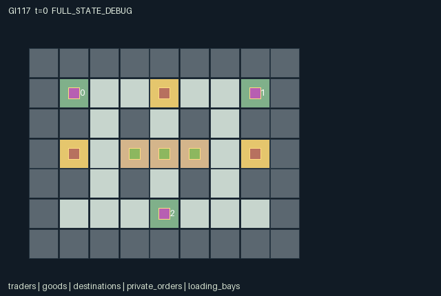

GI117 / SPATIAL
隐需交换货场
单格携带容量与六件真实货物约束交易；角色可付出行动广播自己的私有需求。
Original saved demonstration
Recorded native state, often authored scripts or interventions; information scope and failures are preserved in the original provenance. This is a saved demonstration, not live browser play.

Release verification episode
Untrained uniform legal actions. Actual JAX state sampled along the full original episode; full-state debug camera. No human performance or learning claim.

Run this game
crucibles play --game 117
Start Python locally, then open the address printed by the terminal. Installation, multiplayer, takeover and keyboard controls →
Objective, rewards & ending
Exact task contract
{
"objective": "Each trader delivers two goods of its private required type to its own dock. Exactly two physical goods of each type exist.",
"natural_termination": "All three traders have delivered two goods; otherwise truncate at tick 160. A finished trader is inactive and accepts only wait.",
"interaction": "One-slot inventory, narrow routes, public reservations and escrow commitments constrain others. Offers bind existing carried goods at loading bays. Reciprocal offers atomically swap a pair; if no pair clears, a compatible three-way cycle can clear atomically. No goods are copied or created.",
"observation_access": "Each role sees all public yard, physical goods, reservations, posted offers and deliberately broadcast truthful signals, plus only its own private demand one-hot. Private order entities have identity-matrix visibility. A reveal action or an observed delivery may legitimately disclose demand; hidden order fields never enter another row or public scene attribute.",
"transition_order": "Movement uses old occupancy, reservation and escrow state; timers decay; inventory and deliveries settle in rotating order; reservations, offers and truthful signals update; rotating bilateral matching has priority over three-way cycle clearing; expiring/settled offers clear, then joint terminal state is evaluated."
}Declared per-step reward bounds: -1.0 to 6.0. Observability: partially_observable.
Rules
- Every trader has one carrying slot and needs two units of its private type at its indexed dock. Six identified goods exist: two of each type.
- The map, cargo types, goods and bay reservations are public. Other traders private orders remain hidden until their actions reveal information.
- Action thirteen broadcasts the speakers actual private demand for five ticks. Silence leaves that order private.
- An offer is posted only while carrying a good on an exchange bay. It commits the actual good for four displayed ticks and prevents movement, pickup, drop and delivery while active.
- Reciprocal compatible offers settle atomically; a three-way compatible cycle may clear when no bilateral pair does. Trading itself has zero reward.
- Reservations last six displayed ticks and block another trader from entering that bay. Renewing or cancelling uses a turn.
- Natural completion requires all six deliveries. An individually completed trader becomes inactive and accepts only wait.
- Replay and role-view privacy still require independent execution; this is an authored hypothesis, not an accepted game result.
Original mechanism document (historical status wording retained)
# Hidden-demand exchange yard
Status: **AUTHORED_NOT_EXECUTED**. Candidate `game-v3-00117`, source attempt 0, source split train, final test unused.
## Spatial rules and cross-agent dependence
Three traders move through a 9 by 7 exchange yard with wall gaps, goods stations, three central loading bays and indexed delivery docks. Six identified goods exist, two of each of three types. Each trader initially carries one good, has only one carrying slot and privately needs two goods of a reset-assigned type. Demands are a random permutation: each role learns its own entry, which constrains but does not completely specify the other two. The map and all physical goods are public; the private order type is not painted onto a dock.
Movement uses rotating occupancy priority, blocks currently occupied destinations and checks the previous state's reservation and escrow restrictions. A nearby free bay can be reserved for six displayed ticks, excluding other traders from entering it. Reservation or renewal costs an action. A trader may hold at most one live reservation, renew its nearby existing reservation, release it or let it expire. An occupied bay cannot be reserved against its occupant. These rules make loading space and narrow routes genuine shared constraints.
At a bay, actions 10, 11 and 12 post the carried good requesting type 0, 1 or 2. The give field comes from the actual physical cargo and cannot claim a nonexistent good. The requested type is a chosen public offer, not an automatic disclosure of the hidden order. Posting commits that exact good for four displayed ticks. While committed at the beginning of a transition, the trader cannot move, pick up, drop or deliver; cancellation consumes an action and incurs 0.03. Expiry, cancellation or settlement releases the commitment.
The clearing service first chooses a reciprocal pair in rotating order. It simultaneously exchanges ownership of the two escrowed goods and then clears both offers. If no pair clears, three compatible offers can settle as a three-way cycle. A forward cycle has priority when both directions are compatible. Every transfer is a permutation of existing good owners, with no credit, duplication or half-completed transfer observable between transitions. Each good follows its actual carrier's position. Automatic settlement is authorized by the posting commitment; no extra accept action is required.
Action 13 truthfully publishes the acting trader's own demand for five ticks. It does not permit a freely chosen false type. Silence remains possible. Public observations include posted requests, deliberate signals, cargo and deliveries. A truthful reveal or the public history of a matching delivery can legitimately permit demand inference. Direct demand entries remain absent from other observation rows and all public entities. The separate private-order entity group uses identity-matrix visibility, so only the indexed owner sees its required type in a role view. A future debug view may expose all state only under an explicit omniscient label.
A matching delivery at the actor's own dock transfers the physical good to delivered ownership. Each own delivery pays four units; each delivered good also pays every trader 0.3. Active time costs 0.01 per tick. Trading itself earns nothing. Finished traders disappear from active traffic and have only wait available. Natural completion requires all six goods delivered.
## Partner-dependent strategies and limits
A trader may reveal demand to help others form useful offers, stay silent while choosing a public request, wait for a reciprocal pair or join a three-way cycle. It may transport a good to a partner, drop one to free its slot, reserve space, or leave an approach clear. A matching cycle can remove bilateral bargaining deadlock, but an early pair can also prevent a possible cycle because pair clearing has priority. Offering the type a partner needs is useful only if that partner commits compatible cargo and can reach a bay.
The seed-11701 script moves all three traders to the bays, deliberately reveals their demand signals and proposes a type cycle. The proposed cycle does not depend on observed hidden demand, and it may give a trader a good that does not satisfy its private order. It is a mechanism witness hypothesis, not an optimized policy or a delivery solution.
Three paired hypotheses separately examine the third commitment enabling a three-way settlement, a reservation excluding another trader's west move, and a truthful reveal changing public signal fields. They use fixed seeds, prefixes and integer vectors. The trade pair can produce different owners with exactly the same immediate reward; the trade can be counterproductive for private delivery. The reservation may delay a partner without improving anyone's eventual return. The reveal may enable inference but provides no guaranteed policy benefit. Missing prerequisite states, premature completion or implementation failures must be reported as such.
Changing carrying capacity, demand distribution, physical bay adjacency, reservation duration or the pair/cycle precedence would change bargaining and routing tradeoffs. These are unimplemented variation hypotheses. This source does not measure communication value, equilibrium behavior, negotiation quality or meta-learning adaptation.
## Literal source evidence
- Private entity visibility: `candidate.py:24` contains `n['order_visible'] = jnp.eye(3, dtype=jnp.bool_) & n['order_active'][None, :]`.
- Private demand construction: `candidate.py:50` contains `'demand': jax.random.permutation(key, jnp.arange(3, dtype=jnp.int32)), 'remaining': jnp.full(3, 2, jnp.int32),`.
- Own-demand observation row: `candidate.py:73` contains `return jnp.concatenate((jnp.eye(3, dtype=jnp.float32), jax.nn.one_hot(s['demand'], 3),`.
- Public availability masks: `candidate.py:78` contains `return (jnp.arange(15)[None, :] == 0) | ((~s['done'] & s['agent_active'])[:, None])`.
- Reservation exclusion: `candidate.py:91` contains `reserved = jnp.any(at_bay & (s['bay_ttl'] > 0) & (s['bay_owner'] != i))`.
- Escrow movement restriction: `candidate.py:93` contains `move = s['agent_active'][i] & ~committed[i] & ~reserved & ~occupied & (s['tiles'][target[i, 1], target[i, 0]] != 1)`.
- Goods delivery only at a matching private order: `candidate.py:112` contains `deliver = (a[i] == 7) & ~committed[i] & jnp.any(held) & (`.
- Actual escrow item at a bay: `candidate.py:138` contains `post = (a[i] >= 10) & (a[i] <= 12) & (n['offer_ttl'][i] == 0) & at_bay & jnp.any(held) & n['agent_active'][i]`.
- Truthful public signal: `candidate.py:144` contains `n['signal_type'] = n['signal_type'].at[i].set(jnp.where(signal, s['demand'][i], n['signal_type'][i]))`.
- Reciprocal atomic matching: `candidate.py:153` contains `match = valid & valid[i] & (jnp.arange(3) != i) & (n['offer_request'] == n['offer_give'][i]) & (`.
- Three-way cycle condition: `candidate.py:167` contains `cycle = ~pair_done & (forward | reverse)`.
- No trading reward: `candidate.py:184` contains `reward = (4.0 * delivered_now + 0.3 * jnp.sum(delivered_now.astype(jnp.float32)) -`.
- Absorbing terminal projection: `candidate.py:186` contains `n = {k: jnp.where(s['done'], s[k], n[k]) for k in s}`.
Method ranges: refresh at candidate.py:12-29; reset at candidate.py:31-58; observe at candidate.py:60-74; legal_actions at candidate.py:76-78; raw_step at candidate.py:80-189.
## Literal interface and execution boundary
The author supplied three-agent flat float32 observations, int32 joint actions, fixed-shape dictionary state and homogeneous discrete command attempts. The exact dimensions, every leaf, every observation column, reward bounds, actions and spatial bindings are in manifest.json. Unmet command prerequisites produce no effect; out-of-range integers are converted to wait. Each live raw transition advances t once. Natural completion takes precedence over an equal-tick timeout. Already-terminal raw calls preserve every state leaf, observation and clock, return zero reward and preserve actual terminal causes. There is no raw autoreset.
No candidate was imported or called. No JAX/NumPy import, compilation, numerical game call, training, model API, installation, SSH or remote work occurred during authoring. Standard-library AST and supplied data validators may establish only their literal static checks. They do not establish interface execution, numerical parity, conservation over actual traces, strategic richness, solvability, policy learning or transfer. AUTHORED_NOT_EXECUTED is the package status. The JaxMARL-compatible public dictionary adapter, real replay, RGB animation, interactive playback and role-view audit belong to the separately authorized implementation/validation stage and are not delivered or claimed here.
The playthrough JSON uses literal seeds and joint integer vectors. A trusted runner should use jax.random.PRNGKey(seed) for reset, then jax.random.fold_in(reset_key, step_index+1) for raw-step keys; these are prospective instructions and were not executed. All four kernels use step keys only as interface inputs, so their transition stochasticity is reset-derived. Scripts stop at joint done. They are author hypotheses, not successful trajectories or acceptance gates. Paired tests freeze the shared prefix and the non-intervened actions; they must retain zero, negative, mixed, failure and indeterminate outcomes.
The source uses int32 for small integer categories, owners and counters and bool for masks/terminal causes. The uint32 PRNG key remains trusted trajectory provenance rather than a duplicated state leaf. Render data is declarative. Map and entity positions bind real state. An omniscient debug state, where provided later, must be labelled separately and never substituted for a role observation.
## Official ecosystem inspiration and source use
Only this batch's physically supplied official README excerpts were read for broad ecosystem context: JaxMARL separates MARL environments and algorithms and exposes multi-agent interfaces; Pgx exemplifies JAX-native board states, legal action masks and explicit step randomness; Craftax illustrates persistent spatial game state, inventories and separate reset/render interfaces. These are conceptual influences. No upstream source code, environment layout, asset, baseline or algorithm was copied into this original kernel.
The supplied JaxMARL README identifies Apache-2.0, the Pgx README Apache-2.0, and the Craftax README MIT. Those are descriptions of upstream snapshots, not a new license grant for this package; an original-package release license remains the coordinator's decision. PureJaxRL describes algorithm implementations rather than an environment library. Craftax_Baselines_ppo_rnn.py was supplied and hash-accounted for but was not opened or reused. No baseline replaces the frozen experimental learner. Exact source snapshot URLs and hashes are in generation_record.json; no batch-external source or candidate feedback was consulted.
Generating or replaying these rules would not establish large-scale meta-RL adaptation. Rule/role/map variations discussed above are future research hypotheses requiring their own frozen source, cost and information controls, and genuine train/develop/confirm/final-transfer evidence. They are not implemented variants or measured generalization.
Commands
Roles & abilities
agent_0 Trader 0: private order, one-slot carrier, dock (1,1)
agent_1 Trader 1: private order, one-slot carrier, dock (7,1)
agent_2 Trader 2: private order, one-slot carrier, dock (4,5)
Observation permissions
Training receives only the original observation rows. Role cameras use declared visibility; debug cameras are explicitly marked. Local benchmark records log debug exposure and role takeover history.
Exact observation layout
[
{
"slice": [
0,
3
],
"meaning": "Self trader identity one-hot",
"visibility": "self"
},
{
"slice": [
3,
6
],
"meaning": "Only this row owners private demand type one-hot; other demand entries are absent",
"visibility": "self"
},
{
"slice": [
6,
69
],
"meaning": "Row-major public terrain divided by 4",
"visibility": "public"
},
{
"slice": [
69,
87
],
"meaning": "Three public trader records: x/8,y/8,(cargo type+1)/3,delivered/2,(truthful signal type+1)/3,signal ttl/5",
"visibility": "public"
},
{
"slice": [
87,
111
],
"meaning": "Six goods records: x/8,y/8,type/2,(owner+1)/4, including publicly known delivered locations",
"visibility": "public"
},
{
"slice": [
111,
123
],
"meaning": "Three loading bay records: x/8,y/8,(reservation holder+1)/3,reservation ttl/6",
"visibility": "public"
},
{
"slice": [
123,
138
],
"meaning": "Three public offer records: x/8,y/8,(offered type+1)/3,(requested type+1)/3,offer ttl/4; inactive type fields are zero after encoding",
"visibility": "public"
},
{
"slice": [
138,
147
],
"meaning": "Three delivery dock records: x/8,y/8,delivered/2; no private demand is included",
"visibility": "public"
},
{
"slice": [
147,
150
],
"meaning": "Elapsed ticks/160, cumulative atomic clearings/160, cumulative delivered goods/6",
"visibility": "public"
}
]Entity visibility & attributes
[
{
"id": "traders",
"kind": "agent",
"count": 3,
"position": [
"agent_pos"
],
"active": [
"agent_active"
],
"visibility": [
"agent_visible"
],
"attributes": [
{
"state_path": [
"delivered"
],
"meaning": "Public number delivered by this trader",
"display": "number"
},
{
"state_path": [
"cargo_code"
],
"meaning": "Public carried type, minus one means empty",
"display": "category"
},
{
"state_path": [
"signal_type"
],
"meaning": "Voluntarily revealed truthful demand type, minus one means silent",
"display": "category"
},
{
"state_path": [
"signal_ttl"
],
"meaning": "Remaining public signal ticks",
"display": "bar"
}
]
},
{
"id": "goods",
"kind": "object",
"count": 6,
"position": [
"goods_pos"
],
"active": [
"goods_active"
],
"visibility": [
"goods_visible"
],
"attributes": [
{
"state_path": [
"goods_type"
],
"meaning": "Public physical good type zero, one or two",
"display": "category"
},
{
"state_path": [
"goods_owner"
],
"meaning": "Minus one ground, zero to two carrier, three delivered",
"display": "category"
}
]
},
{
"id": "destinations",
"kind": "landmark",
"count": 3,
"position": [
"dock_pos"
],
"active": [
"dock_active"
],
"visibility": [
"dock_visible"
],
"attributes": [
{
"state_path": [
"delivered"
],
"meaning": "Public delivered count at this indexed dock",
"display": "number"
}
]
},
{
"id": "private_orders",
"kind": "landmark",
"count": 3,
"position": [
"order_pos"
],
"active": [
"order_active"
],
"visibility": [
"order_visible"
],
"attributes": [
{
"state_path": [
"demand"
],
"meaning": "Private required type: visible only to this order owner",
"display": "category"
},
{
"state_path": [
"remaining"
],
"meaning": "Remaining deliveries for this order",
"display": "number"
}
]
},
{
"id": "loading_bays",
"kind": "landmark",
"count": 3,
"position": [
"bay_pos"
],
"active": [
"bay_active"
],
"visibility": [
"bay_visible"
],
"attributes": [
{
"state_path": [
"bay_owner"
],
"meaning": "Reservation holder, minus one means unreserved",
"display": "category"
},
{
"state_path": [
"bay_ttl"
],
"meaning": "Remaining reservation ticks",
"display": "bar"
}
]
},
{
"id": "public_offers",
"kind": "object",
"count": 3,
"position": [
"offer_pos"
],
"active": [
"offer_active"
],
"visibility": [
"offer_visible"
],
"attributes": [
{
"state_path": [
"offer_give"
],
"meaning": "Offered physical good type, minus one means inactive",
"display": "category"
},
{
"state_path": [
"offer_request"
],
"meaning": "Requested type chosen by the trader, not a private-order field",
"display": "category"
},
{
"state_path": [
"offer_ttl"
],
"meaning": "Remaining escrow commitment ticks",
"display": "bar"
}
]
}
]Actual verification & provenance
Per-game execution receipt
{
"game": "gi117",
"status": "PASS",
"verification_revision": 2,
"source_sha256": "5726fbbef820541fcb14591d64f11730f02c4feccf98b7305bd5f8bd63c4ad60",
"seed": 20261101,
"runtime": {
"jax": "0.4.38",
"numpy": "1.26.4",
"devices": [
"TFRT_CPU_0"
]
},
"dimensions": {
"num_agents": 3,
"observation_size": 150,
"num_actions": 15,
"max_steps": 160
},
"checks": {
"eager_reset": {
"status": "PASS",
"seconds": 1.2814679145812988
},
"observation_spaces_legal_masks": {
"status": "PASS",
"seconds": 0.25797390937805176
},
"eager_step": {
"status": "PASS",
"seconds": 2.6583139896392822
},
"jit_reset": {
"status": "PASS",
"seconds": 0.17100071907043457
},
"jit_step": {
"status": "PASS",
"seconds": 1.7185580730438232
},
"eager_jit_integer_parity_float_measurement": {
"status": "PASS",
"seconds": 0.0010058879852294922
},
"jit_vmap_reset": {
"status": "PASS",
"seconds": 0.32470107078552246
},
"jit_vmap_step": {
"status": "PASS",
"seconds": 2.472545623779297
},
"outer_autoreset_api": {
"status": "PASS",
"seconds": 2.3012568950653076
},
"full_original_horizon_episode_and_render": {
"status": "PASS",
"seconds": 0.9204661846160889
}
},
"human_scores": null,
"browser_controls": "PENDING",
"failures": [],
"elapsed_seconds": 12.566864967346191,
"float_parity_max_abs": 0.0,
"numerical_parity": "EXACT",
"raw_terminal_absorbing": "PASS",
"terminal_outer_reset": "PASS",
"episode_steps": 160,
"scripted_random_returns": [
-1.5999999642372131,
-1.5999999642372131,
-1.6299999635666609
],
"terminal": true,
"demo_information": "FULL_STATE_DEBUG",
"demo_frames": 28,
"render_roles_checked": 3
}Chromium control verification
{
"game": "gi117",
"status": "PASS",
"human_scores": null,
"engineering": true,
"checks": [
"catalog_selected_and_real_native_reset",
"dom_queue_and_native_step",
"second_participant_ownership_and_native_joint_step",
"all_roles_individually_controllable_no_role_cap",
"explicit_debug_camera",
"release_to_pure_ai_without_reset"
],
"ui_sha256": "15b5861d23b3c42811865c954d5a988280bbfd21cf8e93754be2437a027158c5",
"seconds": 5.296130657196045
}Original identity and file hashes
{
"id": 117,
"key": "gi117",
"title": "隐需交换货场",
"summary": "单格携带容量与六件真实货物约束交易；角色可付出行动广播自己的私有需求。",
"tags": [
"私有需求",
"货物交换"
],
"family": "spatial",
"dimensions": {
"num_agents": 3,
"observation_size": 150,
"num_actions": 15,
"max_steps": 160
},
"source_sha256": "5726fbbef820541fcb14591d64f11730f02c4feccf98b7305bd5f8bd63c4ad60",
"manifest_sha256": "fbf6eea5e59b465c87b6776e57c0fd44db341db1fb0e74f6799f67cde06449e7",
"files": [
{
"file": "candidate.py",
"sha256": "5726fbbef820541fcb14591d64f11730f02c4feccf98b7305bd5f8bd63c4ad60",
"bytes": 13137,
"origin": "work/exp_2/game_incubator_v3/community_games222_225_visualization_root222_v1/native154_candidate/registry/v2/games/game-v3-00117/candidate.py"
},
{
"file": "manifest.json",
"sha256": "fbf6eea5e59b465c87b6776e57c0fd44db341db1fb0e74f6799f67cde06449e7",
"bytes": 19014,
"origin": "work/exp_2/game_incubator_v3/community_games222_225_visualization_root222_v1/native154_candidate/registry/v2/games/game-v3-00117/manifest.json"
},
{
"file": "scene.json",
"sha256": "2affade0a1df16ca834ea36982cca3ed4e6985bb6b75f8c54156d6d885e25b76",
"bytes": 9399,
"origin": "work/exp_2/game_incubator_v3/community_games222_225_visualization_root222_v1/native154_candidate/registry/v2/games/game-v3-00117/scene.json"
},
{
"file": "mechanism.md",
"sha256": "82f1cbe81dab81cd6e1766b9d366b6d47fd37a421a5d57e749ced07d84dd03c7",
"bytes": 11455,
"origin": "work/exp_2/game_incubator_v3/sources/game-v3-00117/attempt_00/mechanism.md"
},
{
"file": "playthrough.json",
"sha256": "a16c89183262309a5ef490839e87923d806be94d1ae11ce4d5648e8eb3d0cd5f",
"bytes": 6792,
"origin": "work/exp_2/game_incubator_v3/sources/game-v3-00117/attempt_00/playthrough.json"
}
],
"original_status": "NATIVE154_REFERENCE",
"original_saved_replay": true,
"release_validation": "PASS",
"human_scores": null,
"browser_validation": "PASS"
}